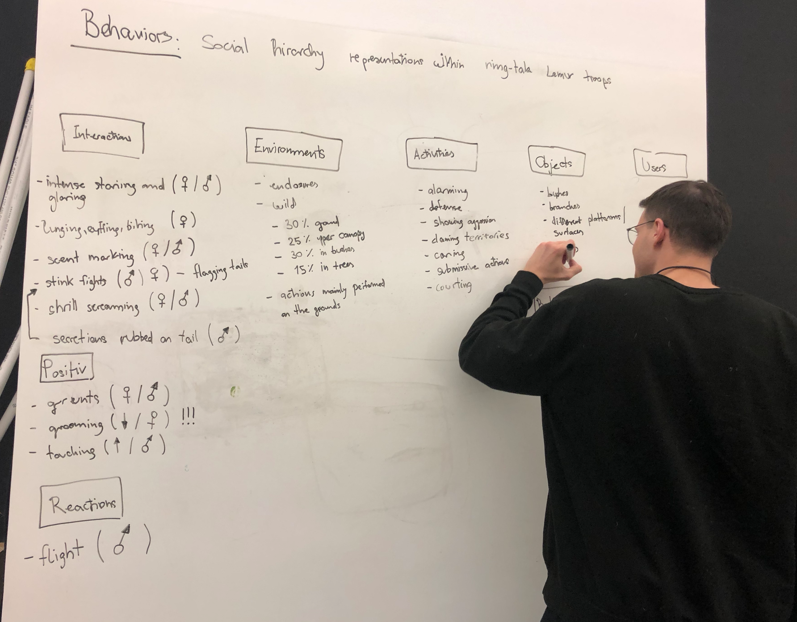
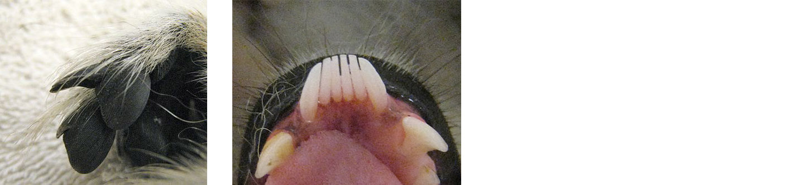
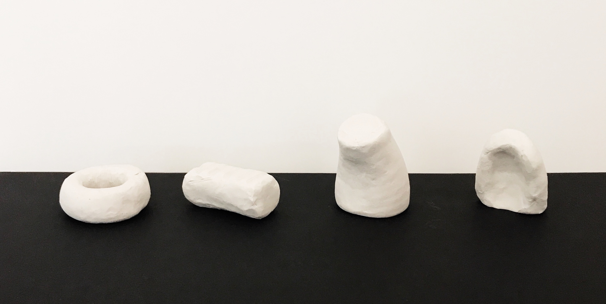
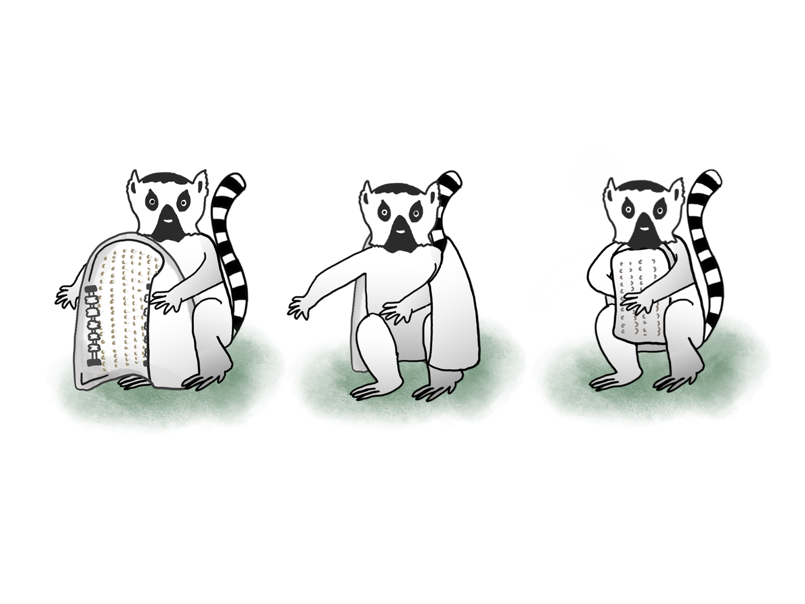

Week 7
Design Methods
Big Idea: To use three design methods to explore how and what to design for an urban or wild animal of our choice, and to achieve the ultimate goal of creating an enriched dialogue with that animal.
Teammate: Max Klein
Animal: Ring-tailed Lemur

Max and I decided to move forward with Ring-tailed Lemurs who we still highly admire of their intelligence and intricate norms. Based on our knowledge and research from previous Enrichment projects, we wanted to dive deeper into Ring-tailed Lemurs’ behaviors that are beyond basic feeding and resting. Ring-tailed lemurs are highly sociable animals, and they demonstrate a complex communication system within their social groups. They travel and live in a group setting–so called lemur troops. Ring-tailed lemur troops are always female-dominant, and gender-based or age-based social behaviors emerge and display variously around that central theme. We were very intrigued by such a system and how it affected everything they do, so we agreed to explore further and ask more “why” on Ring-tailed Lemurs’ social hierarchy behaviors. In terms of creating a dialogue with Ring-tailed Lemur within that topic, we weren't sure about what exactly what we could design as an outcome, but we tried to keep our thoughts flowing and options open. Thus, using these three methods step by step can hopefully bring us insights and vantage points, leading us to an interesting intervention that will create a dialogue with Ring-tailed Lemurs.
1. AEIOU - "Activity, Environment, Interaction,Objects"
Behavior: Social-Hierarchy Representation within the Ring-tailed lemur troops
Activity
*Alarming*Defense
*Showing Aggression
*Claiming territories
*Caring
*Submissive actions
*Courting
Environment
*Enclosure/Captived*Wild
**30% Ground
**25% mid-up Canopy
**30% in bushes
** 15% in trees
*Actions mainly performed on the ground
Interaction
Antagonistic
*Intense staring and grooming (m/f)*Lunging, Biting, Cuffing (m/f)
*Scent Marking (m/f)
*Flagging tails (m)
*Secretion rubbed on tails(m)
*Shrill Screaming (m/f)
*Flight(m)
Protagonistic
*Grunts (m/f)*Grooming (m/f)
*Touching (m/f)
Fun Fact:
We originally started with listing everything Ring-tailed lemurs would do, underneath “Activity”, in response to displaying different behaviors within their social hierarchy. Once we moved into the “Interaction” section, we realized we listed all the interactions already underneath “Activity”. That’s when we truly figured the different concentrations between the two and ended up finishing our chart as “IEAOU”.
2. Behavioral Mapping

3. Branstorming Tree


Thought and conclusion:
Ring-tailed lemurs are very social. Within their troops, their behaviors are highly rank-based and gender-based. We try not to neglect the behavioral differences that different gender of lemurs would display, and in other words, we try to zoom into these differences as they are relevant to everything they do. In our brainstorming session, we started with listing every interaction we discovered in our “AEIOU” exercise. Then we re-organized our chart and thought flow to a pragamtic format. Creating dialogues needs to happen at the right timing when their natural instincts fit in and behavioral displays make sense. We decided to categorize their behavioral process into steps–Trigger, action and outcome– in order to make sure we find the right gap among these specific behaviors. We ended up analyzing four behaviors that are only unique to lemurs. However, these behaviors are quite different when it comes to its functionality and outcome. We had a bit struggle deciding whether it’s more important to create a dialogue or creating an enrichment intervention. Because a dialogue with an animal is not the same as enriching their lives. A dialogue is creating a stimulus that the animal can respond to with its uniquely natural behavioral instinct. However, that stimulus can be irritation or withheld a purpose of attacking, and animals would technically still respond to it. Is a dialogue necessarily enriching animal’s lives? Not necessarily. Is an enrichment intervention creating dialogues with animals? Not necessarily. Lizard-example from Ian Ingram showed that Lizard would do push-up when one sees a straw device that imitates that behavior. The behavioral insight is clear as Lizard would display a sense of territory or showing of strength when sees a “push-up” trigger. That does make a lizard to respond but how much does it mean for the lizard? Unless we try to understand it from the perspective of creating dialogues with the animal so we get to understand a specific behavior better through an experimental stimulus rather than an enriching device. Where’s the balanced middle ground that achieve both purposes? I think it would be ideal if we can find a tackle point that answers to both.
Prototype Ideation
Background
Ring-tailed lemurs spend a great deal of their time grooming in the wild or in the zoo. Lemurs are a highly social species, with much of their communication revolving around both vocalizations and physical contact with each other through grooming. The grooming behavior is seen as a highly-social and selective behavior that reflects the closeness among the lemurs. Research has shown that grooming happens more frequently between those that are close, and usually between mother and daughter. As lemurs are female-dominated social groups, male lemurs don’t have as high social regards compared to their female companions. We found research that shows that male Lemurs travel and change group among troops, which indicates a less sense of belongingness to a specific group due to their lower social rankings. Ring-tailed lemurs display vocal responses that would indicate their social closeness as well.
Grooming and Physiology:
Ring-tailed lemurs’ physiology has evolved into meeting the better need for this behavior. Ring-tailed lemurs use their mouth and limbs while grooming. They possess the unique feature– toothcomb that nearly all strepsirrhine primates have. The toothcomb is used during oral grooming, which involves licking and tooth-scraping. Besides their special teeth, they also have toilet-claws (sometimes referred to as a grooming claw) specialized for personal grooming specifically to rake through fur that is unreachable by the mouth.
In “Primate” Magazine, it was mentioned that Grooming was found to be performed chiefly by older, higher ranking animals; touching
Vocal exchange during grooming:
Vocal exchanges are predicted to serve a social bonding function by allowing conspecifics to ‘groom-at-a-distance’. There’s a vocal exchange during grooming. Its purring vocalization is similar to that of the domestic cat.
Challenge and Insights:
We don’t just want to create a tool that lemurs already have or can be found by them within their natural habitat, nor do we want to simply duplicate their body parts that function for grooming. What we want to find out is what’s lacking in their grooming social interaction, and who is not getting enough social interaction due to their lower social ranking in the troop. As grooming is a mutual social behavior, we realized that potentially male lemurs in the troop might not get as much responsive mutual interaction for an activity like grooming. Indeed they have mouths and limbs that allow them to groom themselves, but the social interaction and the social bonding can be absent for a lone male lemur.
Idea: an Allogrooming Bonding Companion for the left-out lemurs in a lemur troop
Functionality/Benefits
It creates a sense of companionship with behavioral feedback that is intuitive and natural to the Ring-tailed lemurs
It purs when a lemur touches it.
It sits in a way that’s similar to the Ring-tailed Lemur’s posture and has a fluid shape so lemurs can hold it or hug it with comfort and familiarity.
It grooms a lemur when lemur rubs through the rollers and the comb wall
Affordance:
Active(Lemurs giving):
Shape
• Based on physiology and anatomy
* Social Interaction
• Material: Fur
* So lemurs can groom
* To meet their caregiving
• Sound: Purring
* It’s the feedback of the giving action
Shape Exploration:
 prototype1: